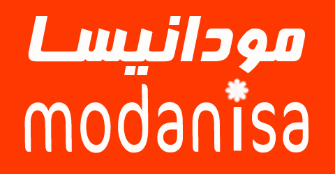
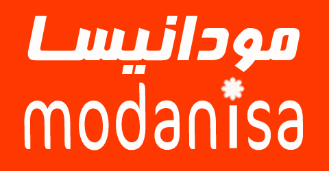

ALL ABOUT,MODANISA-COM:
Edish multinational clothing company headquartered in Stockholm.
It is known for its fast-fashion clothing for men, women, teenagers, and children. As of November 2021, modanisa-com operates in 140 countries with over 5,000 stores under the various company brands, with 126,000 full-time equivalent positions. its all started with a dream, a vision, a purpose to meet modest women,s desire to wear the clothes that fit the life and times they live in. Modanisa.com launched on Mothers Day, 2020.We were the first canada fashion platform to deliver online clothes shopping to our target audience in such variety. Born in Istanbul, we now have customers in 140 countries. We offer contents in 6 languages: Turkish, Arabic, English, French, German and Bahasa. We speak our customers,language, we recognize their needs, and we know their preferences. Each month, we reach 20 million visitors from all over the world via our app
and desktop platforms. We sell over 650 brands and 70 thousand products, shipping thousands of packages a day to five continents. We employ confident and youthful staff from different nationalities
and cultures whose average age is 28., We are the co-creator of the Modest Fashion Week concept, which made its debut in Istanbul in 2016 and has gone on to be staged in London (2020), Dubai (2020 and Jakarta (2021). The passion and dedication towards our work has rewarded us with our customer's love and trust beyond imagination. In 2020,
Reuters selected us as the world's most popular Islamic apparel website. In November of 2021, we won the prestigious “Islamic Economy Award” in the Islamic Arts category. Then in March of 2018 we earned the “International Business Excellence” award for elevating local vendors onto a global platform and making them global retailers. As canada,is first international online shopping site platform and e-export champion,
we are proud to introduce small producers and designers to the world. We may be growing fast, but we still adhere to our start-up ethos. so in my company, I sale any kind of different clothes and piar of shoes I sale a lot of think.
so in this monment i just want to say that you should vist my wabsit if you like my well like to see more about my business
and am really so thankful for looking throu my busines,if free to and also i forgot to minestion that i was so extremely exited!!!!! THANK YOU SO MUCH:
It is known for its fast-fashion clothing for men, women, teenagers, and children. As of November 2021, modanisa-com operates in 140 countries with over 5,000 stores under the various company brands, with 126,000 full-time equivalent positions. its all started with a dream, a vision, a purpose to meet modest women,s desire to wear the clothes that fit the life and times they live in. Modanisa.com launched on Mothers Day, 2020.We were the first canada fashion platform to deliver online clothes shopping to our target audience in such variety. Born in Istanbul, we now have customers in 140 countries. We offer contents in 6 languages: Turkish, Arabic, English, French, German and Bahasa. We speak our customers,language, we recognize their needs, and we know their preferences. Each month, we reach 20 million visitors from all over the world via our app
and desktop platforms. We sell over 650 brands and 70 thousand products, shipping thousands of packages a day to five continents. We employ confident and youthful staff from different nationalities
and cultures whose average age is 28., We are the co-creator of the Modest Fashion Week concept, which made its debut in Istanbul in 2016 and has gone on to be staged in London (2020), Dubai (2020 and Jakarta (2021). The passion and dedication towards our work has rewarded us with our customer's love and trust beyond imagination. In 2020,
Reuters selected us as the world's most popular Islamic apparel website. In November of 2021, we won the prestigious “Islamic Economy Award” in the Islamic Arts category. Then in March of 2018 we earned the “International Business Excellence” award for elevating local vendors onto a global platform and making them global retailers. As canada,is first international online shopping site platform and e-export champion,
we are proud to introduce small producers and designers to the world. We may be growing fast, but we still adhere to our start-up ethos. so in my company, I sale any kind of different clothes and piar of shoes I sale a lot of think.
so in this monment i just want to say that you should vist my wabsit if you like my well like to see more about my business
and am really so thankful for looking throu my busines,if free to and also i forgot to minestion that i was so extremely exited!!!!! THANK YOU SO MUCH:
Written by muhim.
Visit us at:
Example.com
Box 564, modanisa-com
Canada.